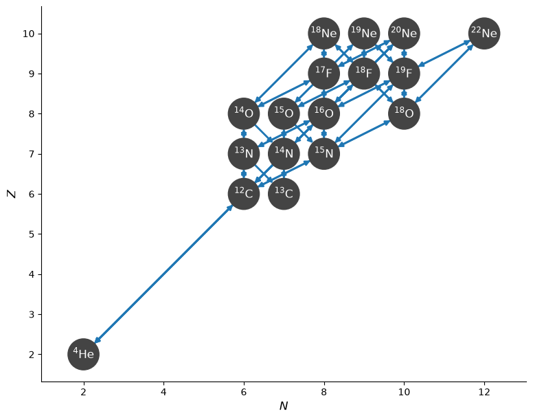

Documenting Networks#
When publishing results using a reaction network, the species evolved, rates used, and sources for data should be stated, to allow for reproducibility. pynucastro has some helper functions for this purpose.
We’ll create a simple network here to explore these.
import pynucastro as pyna
net = pyna.network_helper(["p", "he4",
"c12", "c13",
"n13", "n14", "n15",
"o14", "o15", "o16", "o18",
"f17", "f18", "f19",
"ne18", "ne19", "ne20", "ne22"])
fig = net.plot()

LaTeX string of nuclei#
We can get a LaTeX-formatted string of the nuclei using get_nuclei_latex_string.
s = net.get_nuclei_latex_string()
s
'${}^{1}\\mathrm{H}$, ${}^{4}\\mathrm{He}$, ${}^{12\\mbox{-}13}\\mathrm{C}$, ${}^{13\\mbox{-}15}\\mathrm{N}$, ${}^{14\\mbox{-}16,18}\\mathrm{O}$, ${}^{17\\mbox{-}19}\\mathrm{F}$, ${}^{18\\mbox{-}20,22}\\mathrm{Ne}$'
In Jupyter, we can render this:
from IPython.display import display, Markdown, Math
display(Markdown(s))
\({}^{1}\mathrm{H}\), \({}^{4}\mathrm{He}\), \({}^{12\mbox{-}13}\mathrm{C}\), \({}^{13\mbox{-}15}\mathrm{N}\), \({}^{14\mbox{-}16,18}\mathrm{O}\), \({}^{17\mbox{-}19}\mathrm{F}\), \({}^{18\mbox{-}20,22}\mathrm{Ne}\)
We see that by default it combines isotopes.
Table-formatted list of rates#
s2 = net.get_rates_latex_table_string()
This is a string where each table row (terminated with the LaTeX newline, \\) is a rate pair (forward and reverse) from the network.
The first row is
print(s2.split(r"\\")[0])
$3 ~{}^{4}\mathrm{He} \rightarrow {}^{12}\mathrm{C}+ \gamma$ & ${}^{12}\mathrm{C} \rightarrow 3 {}^{4}\mathrm{He}$
This full string can be inserted into a LaTeX {\tt tabular} environment containing 2 columns.
To see an example rendering, in Jupyter, we can style it as a math array.
Note
The output of get_rates_latex_table_string is meant to be used in a LaTeX document.
To get it to render in a Jupyter notebook, we need to use it in a math array environment and:
remove the explicit
$from the stringremove the newlines,
\n
This is done below just to show an example of the table output
table = rf"""
\begin{{array}}{{ll}}
{s2.replace("$","").replace("\n","")}
\end{{array}}
"""
display(Math(table))
Citing rate sources#
Each Rate object contains a source dictionary which gives the details of the paper that measured / described the rate.
We can access the details of the source directly from the Rate.source dictionary, or we can get a set of the unique sources
and then access them. Here’s we’ll get the unique sources first:
cites = sorted(list({r.source["Label"] for r in net.get_rates()}))
print(cites)
['Ha96', 'cb09', 'cf88', 'co10', 'da18', 'dc11', 'fy05', 'ia08', 'il10', 'im05', 'lg06', 'li10', 'ls09', 'nac2', 'nacr', 'oda', 'suzuki', 'wc12', 'wh87']
This information can further be used with the RateSource class to get the information on the publication.
rs = pyna.rates.rate.RateSource
from pprint import pprint
for c in cites:
pprint(rs.source(c))
{'Author': 'Hahn, K I',
'Label': 'Ha96',
'Publisher': 'PhRvC 54, 4, p1999-2013',
'Title': 'Structure of 18Ne and the breakout from the hot CNO cycle',
'URL': 'https://doi.org/10.1103/PhysRevC.54.1999',
'Year': '1996'}
{'Author': 'Chipps, K.A.',
'Label': 'cb09',
'Publisher': 'PRC 80, 065810',
'Title': 'The 17F(p,γ)18Ne resonant cross section',
'URL': 'https://doi.org/10.1103/PhysRevC.80.065810',
'Year': '2009'}
{'Author': 'G R Caughlan',
'Label': 'cf88',
'Publisher': 'ADNDT 40, 283',
'Title': 'Thermonuclear Reaction Rates V',
'URL': 'https://doi.org/10.1016/0092-640X(88)90009-5',
'Year': '1988'}
{'Author': 'Constantini, H. et al',
'Label': 'co10',
'Publisher': 'PRC 82, 035802',
'Title': '16O(α,γ)20Ne S factor: Measurements and R-matrix '
'analysis',
'URL': 'https://doi.org/10.1103/PhysRevC.82.035802',
'Year': '2010'}
{'Author': "G. D'Agata et al.",
'Label': 'da18',
'Publisher': 'APJ 860 (2018) 11',
'Title': 'The 19F(?, p)22Ne Reaction at Energies of Astrophysical Relevance '
'by Means of the Trojan Horse Method and Its Implications in AGB '
'Stars',
'URL': 'https://doi.org/10.3847/1538-4357/aac207',
'Year': '2018'}
{'Author': 'Davids, B.',
'Label': 'dc11',
'Publisher': 'ApJ 735, 40',
'Title': 'THE INFLUENCE OF UNCERTAINTIES IN THE 15 O(α, γ ) 19 Ne '
'REACTION RATE ON MODELS OF TYPE I X-RAY BURSTS',
'URL': 'https://doi.org/10.1088/0004-637X/735/1/40',
'Year': '2011'}
{'Author': 'H.O.U. Fynbo et al',
'Label': 'fy05',
'Publisher': 'Nature 433, 136-139',
'Title': 'Revised rates for the stellar triple-a process from measurement of '
'12C nuclear resonances',
'URL': 'https://doi.org/10.1038/nature03219',
'Year': '2005'}
{'Author': 'Iliadis, C.',
'Label': 'ia08',
'Publisher': 'PRC77, 045802',
'Title': 'New reaction rate for 16O( p,γ)17F and its influence on the '
'oxygen isotopic ratios in massive AGB stars',
'URL': 'https://doi.org/10.1103/PhysRevC.77.045802',
'Year': '2008'}
{'Author': 'Iliadis, C.',
'Label': 'il10',
'Publisher': 'NPA 841, 1; 31; 251; 323',
'Title': 'Charged-particle thermonuclear reaction rates',
'URL': 'https://doi.org/10.1016/j.nuclphysa.2010.04.012',
'Year': '2010'}
{'Author': 'G. Imbriani et al',
'Label': 'im05',
'Publisher': 'European Physics Journal A 25,',
'Title': 'S-factor of <sup>14</sup>N(p,γ)<sup>15</sup>O',
'URL': 'https://link.springer.com/article/10.1140/epja/i2005-10138-7',
'Year': '2005'}
{'Author': 'Z.H. Li et al.',
'Label': 'lg06',
'Publisher': 'PRC 74, 035801',
'Title': '<sup>13</sup>N(d,n)<sup>14</sup>O reaction and the astrophysical '
'<sup>13</sup>N(p,γ)<sup>14</sup>',
'URL': 'https://doi.org/10.1103/PhysRevC.74.035801',
'Year': '2006'}
{'Author': 'LeBlanc, P.J.',
'Label': 'li10',
'Publisher': 'PRC 82, 055804',
'Title': 'Constraining the S factor of 15 N( p,γ ) 16 O at '
'astrophysical energies',
'URL': 'https://doi.org/10.1103/PhysRevC.82.055804',
'Year': '2010'}
{'Author': 'He)<sup>13</sup>N reaction</sup6<>',
'Label': 'ls09',
'Publisher': '2010',
'Title': 'Science in China G: Physics an',
'Year': 'https://doi.org/10.1007/s11433-010-0128-8'}
{'Author': 'Xu, Y. et al.',
'Label': 'nac2',
'Publisher': 'Nucl. Phys. A 918, P. 61',
'Title': 'NACRE2',
'URL': 'https://doi.org/10.1016/j.nuclphysa.2013.09.007',
'Year': '2013'}
{'Author': 'Angulo C.',
'Label': 'nacr',
'Publisher': 'Nuclear Physics, A656, 3-183',
'Title': 'A compilation of charged-particle induced thermonuclear reaction '
'rates',
'URL': 'https://doi.org/10.1016/S0375-9474(99)00030-5',
'Year': '1999'}
{'Author': 'T. Oda, M. Hino, K. Muto, M.Takahara, K. Sato',
'Label': 'oda',
'Publisher': 'Atomic Data and Nuclear Data Tables, Volume 56, Issue 2',
'Title': 'Rate Tables for the Weak Processes of sd-Shell Nuclei in Stellar '
'Matter',
'URL': 'https://doi.org/10.1006/adnd.1994.1007',
'Year': '1994'}
{'Author': 'T. Suzuki, H. Toki, K. Nomoto',
'Label': 'suzuki',
'Publisher': 'The Astrophysical Journal, Volume 817, Number 2',
'Title': 'Electron Capture and β-Decay Rates for sd-Shell Nuclei in '
'Stellar Environments Relevant to High-Density O-NE-MG Cores',
'URL': 'https://doi.org/10.3847/0004-637X/817/2/163',
'Year': '2016'}
{'Author': 'J. K. Tuli',
'Label': 'wc12',
'Publisher': 'National Nuclear Data Center',
'Title': 'Weak rates from the Nuclear Wallet Cards',
'URL': 'https://www.nndc.bnl.gov/',
'Year': '2012'}
{'Author': 'M.Wiescher',
'Label': 'wh87',
'Publisher': 'ApJ 316, 162-171',
'Title': 'Alpha-burning of O14',
'URL': 'https://doi.org/10.1086/165189',
'Year': '1987'}
This information can then be used to add citations to a publication.